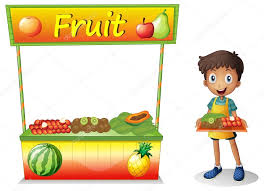

Durante la pandemia, decidí emprender un negocio de frutas y verduras para ganar dinero. A mis 16 años, vendía productos frescos de agricultores locales en mi vecindario. Mi objetivo era generar ingresos mientras ayudaba a la gente a comer más saludable. Así, logré ganar dinero y conectar con los demás.
